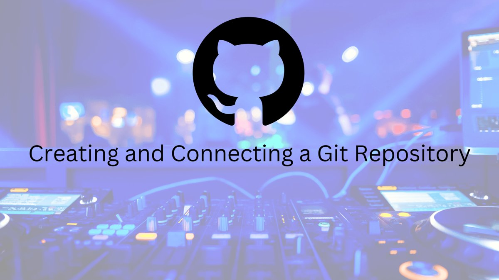

Creating and Connecting a Git Repository

Git is a widely used version control system that lets developers track changes in their code, work together and manage projects efficiently. GitLab is a web-based DevOps platform that builds on Git, adding project planning, source code management, CI/CD and monitoring. Together, Git and platforms like GitHub and GitLab give you a solid setup for coding, testing and deploying software.
Here's how to create a repository, connect it to a remote and handle the basic day-to-day operations. It assumes you already have Git installed.
Step 1: Create a local Git repository
- Open your terminal or command prompt.
- Go to the folder where you want the repository:
cd /path/to/your/directory - Initialise a new repository there:
git init
Step 2: Create a remote repository
- Go to your chosen platform, such as GitHub, GitLab or Bitbucket.
- Sign in, or create an account if you need one.
- Create a new repository through the platform's interface and give it a name.
Step 3: Connect the local and remote repositories
- Link your local repository to the remote one:
Replacegit remote add origin <remote_repository_url><remote_repository_url>with your remote's URL, for examplehttps://github.com/username/repo.git. - Check the remote is set correctly:
You should seegit remote -voriginlisted with both fetch and push URLs.
Step 4: Add and commit files
- Create or copy files into your local repository folder.
- Stage them:
This stages everything in the current folder. You can also name individual files.git add . - Commit with a clear message:
git commit -m "Initial commit"
Step 5: Push to the remote repository
git push -u origin masterThis pushes your local master branch to the remote. The -u flag sets up tracking, so next time a plain git push is enough. Newer repositories often use main instead of master.
Step 6: Pull changes from the remote (optional)
If you work with others, or change things on the remote directly, bring those changes down with:
git pull origin masterStep 7: Branching (optional)
Create a branch and switch to it when you want to work on a feature or fix in isolation:
git branch feature-branch
git checkout feature-branchStep 8: Keep developing and collaborating
With the two repositories connected, you can carry on building your project and working with others, using Git to manage every version. Commit and push regularly so the local and remote copies stay in sync.
Back to all posts